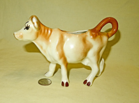
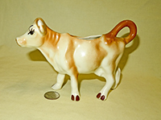
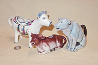
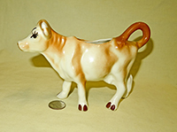
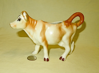

My Story
 My father (born 1908) had one cow (right)
when he was a child. I (born 1940) also had one cow "Bessie", (below, left) when I was a
child. When I was a good boy and finished my milk it gave me more. My wife and I got one for each of our
three boys (born in the ‘60s). Put 5 cows together, and they start to make a herd. My father (born 1908) had one cow (right)
when he was a child. I (born 1940) also had one cow "Bessie", (below, left) when I was a
child. When I was a good boy and finished my milk it gave me more. My wife and I got one for each of our
three boys (born in the ‘60s). Put 5 cows together, and they start to make a herd.
For a long time, I just occasionally picked one up at a flea market; and my price limit was $10.
Nevertheless, the collection slowly grew till it numbered 50 or so; we had them on shelves around the top
of the kitchen, and then when we moved to an older house there were some shelves in the guest bathroom
where we put them, and our many guests used to get a great kick out of them.
Everything was fine until we moved to London in 1995. From visits to the Victoria and Albert museum, the
Bermondsey Market, antique shows, the Silver Vaults, and Stoke-on-Trent I learned a bit about the history
of cow creamers and had a chance to see some superb Staffordshire and silver examples. At that point I
decided that I might as well get serious about my own collection, and quite obviously the price limit
disappeared.
One other thing happened, in spite of my initial reluctance – the collection expanded to include cow
shaped vessels designed for pouring but not really intended for cream. Some of this was by error on my
part – what I took to be a cow creamer turned out to be designed for wine, water, or some other liquid; or
some cows that are more or less shaped and styled like creamers are simply too large for any civilized
cream user, and thus likely intended for milk or water. And, I will confess, as the collection grew I
decided to add other vessels that met the basic rule of being cow or cow-head shaped and designed to pour
or dispense liquid – thus pitchers, teapots, calligraphy water droppers, a variety of what can be referred
to as rhytons (see the history page) or liquor or wine dispensers, some toy milking cows, and even watering
cans joined in. Never (or almost never except by error) plain non-pouring cows or salt and pepper shakers
– although inevitably, given tea and coffee drinkers’ other bad habit (I take mine black by the way) sugar
bowls, but only when they accompanied a cow creamer. Thus I’m afraid that this collection is somewhat
misnamed, although the core and to me the most important parts are the cow-creamers per se, be they new or
old, metal or earthenware or plastic. These now number well over a thousand, and if one counts the
‘extensions’, the collection probably has a couple thousand items. And thanks largely but by no means
solely to eBay (which has had quite an impact both on availability and price) it continues to grow, weekly
if not daily.
So what is a cow creamer, and what extensions are allowed to join the collection?
Since you will find when you peruse the following list that the collection has grown from simply small cow shaped creamers to a number of other 'vessels' capable of holding and pouring liquids, it's probably best to first state what is NOT included: Basically, cow figurines ,vases, mugs, cookie jars, etc. They have to pour. This eliminates a number of interesting things like the lovely early Delft and French cow figures, nativity scene cows, the myriad and very humerous Cow Parade figures and statues (there are come Cow Parade creamers and a couple teapots), and most 'vache feves' (or 'beans', the cute little figures that are put in King Cakes or just mnade for collectors - there are literally hundreds of them, check Ebay for a glimpse of the diversity). If I expanded to any of those, I'd need a couple more barns.
.
Click on any thumbnail for a larger picture.
|

|
The primary rule is based on the history of these items (see that section) as
well as my first ones: The creamer must be a whole cow (she or he can be standing, sitting, or lying
down), or a recognizable part of a cow (especially the head) with two holes, one to put the cream in,
the other to pour it out. Some differences matter, and others don't. And of course there are exceptions
to every rule. |
|
|
So...cow creamers in my collection can be realistic, or they can be fanciful. |
|
|
Some have implausible or at least non-cow-like decorations, some have shapes and colors that are
really wild or idiosyncratic, and some are just plain weird. |
|
|
They can be caricatures, and the colors can be just about anything imaginable. They can be on bases
or on their own. |
|
|
The early Staffordshire cow creamers and their variants like Jackfield or Welsh are almost always
standing on bases, and are generally smaller than 6” tall and 8” long. Most of the modern cow creamers,
and almost all silver ones, lack bases. |
|
|
Cow creamers can be made of just about anything, although most are some form of pottery, ceramic or
earthenware - porcelain, clay of various types and qualities, bone china, etc.. |
|
|
Some are plastic, some metal, and a very few are hand-blown glass.. |
|
|
Some of my favorites are homemade, or artisan crafted. They are either one of a kind, or at most
made in very limited numbers, and even then with individual differences. Almost all of them are
fashioned in some form of pottery. They aren't necessarily the most glamorous cows, but they always
have their own charming personality. |
|
|
Bulls count of course…anatomically complete or not. So do water buffalo, and aurochs. |
|
|
One thing I've stayed well away from is salt and pepper shakers. Sometimes they show up as part of a
set but I never never put them on the web page. |
|
|
There is of course an exception to this rule - when they are an intrinsic part of the cow creamer
and sugar bowl, like on this pair. They'd look very sad without their heads. |
|
|
One place where the basic two-hole 'creamer' rule gets a bit shaky is with size. At
some point, there's a shift between a cow designed to hold cream, and one
intended to serve as a milk or water (or beer or wine) pitcher. But nonetheless, since they (usually)
have two holes and are cow shaped, and it's sometimes a close call as to how to categorize them, they
have a place in my collection. They have their own Pitchers page. |
|
|
Another codicil to the 'rule' is that cow-shaped creamers with
just the one opening and a spout count as well. These are scattered
through the collection pages. Here are my favorites of this type, made and
wood fired for me by my friend Ingrid Barnes. They're described in more
detail in Modern Variations. |
tr>
|
Here are a couple other examples of single-hole cow creamers. I certainly couldn't exclude Borden's famous
Elsie. There are also some superb Royal Bayreuth cow head single-hole creamers, and it would be a shame to
pass them up. |
|
|
My collection even has a few single-hole 'pitchers' (i.e., larger than makes sense for cream except for
gluttons and huge families) as well as single-hole creamers, although for them as well the restriction is
that they need to be cow or cow head shaped, not just cow colored or with a picture of a cow on them. Bowls
or cups don't count, they need to be designed to pour. |
|
|
The collection also includes cow-shaped teapots. These almost invariably have two
holes, and a lid of course. Teapot makers are pretty imaginative, so some of these are
wild. I now have well over 200 and it's getting hard to find new
ones. Perhaps this collection will inspire some fanciful teapot maker!. |
|

|
A further extension to the collection – but still within the basic scope of cow (or ox, bull, water buffalo
etc) containers designed to hold and dispense liquid, are water droppers or suiteki, used by oriental
calligraphers to ‘drop’ a controlled amount of water onto the stone where they grind their ink stick. Like
many other functional oriental objects, and in particular calligraphy sets, beauty was as important as
utility and suiteki come in a wide variety of materials and forms (and prices of course). My small but
growing collection finally got large enough to warrant its own page.
|
 |
Then there are many cow shaped vessels designed for pouring liquids or libations other than milk or cream,
that can be lumped under the general term ‘Rhyton’ (see the History page). This one is a Peruvian Torito de
Pucara, originally designed to hold chicha (corn beer) mixed with blood for use by a priest in the cattle
branding ritual and now a good luck symbol as well as vgery popular Peruvian souvenir. A variety of liquor
dispensers also fall in this general category. I don’t (yet) own any of the ancient (BCE) rhytons, but I do
have a few modern reproductions and several intended for non-cow-produced liquids. The Rhyton page has a
special section for Hindu holy vessels featuring cows or Shiva's bull Nandi. |
|
|
Cruets and wine or oil jugs are examples of the cow-shaped liquid dispensers I have included as Rhytons.
Many of these are from Spain and derive their shape from the 'Iberian Bull' which is a traditional form
originally from Cuenca. |
|
Watering cans generally have a whole bunch of holes, or at least a big one for filling and a smaller one
or many for sprinkling. Some are plastic, others metal, and a few are ceramic. Some are goofy, others
cute or realistic.
|
|
|
The collection also has a few plastic toys designed to take in, then give out milk. In their case the
'out' hole isn't the mouth. |
|
|
And of course doll-house size cow creamers must be included, although most of them are so small they don’t
really pour. I also have a number of miniature ‘collectible’ tea sets, some china and some resin, although
again most of those aren’t designed to really work. |
|
|
I even have a few other animal creamers that I got via mistaken identity or because I couldn't resist. The
only ones of these shown on the web page - under Favorite Brands - are the delightful Schafer and Vater
animal creamers. And there are one or two 'sports' like this Beswick humorous 'fake' cow creamer. |
|
|
Finally, this Vietnamese cow (water buffalo) definitely has two holes. It is, however, an opium pipe (my
one and only), so it hardly qualifies as a creamer or a rhyton or any such, but I couldn’t resist it. It
has been well used (though not by me I assure you).
|
For those of you who search eBay…the term ‘cow creamer’ has almost become generic (there are generally over 1500
on auction…), and I’ve seen all kinds of animal creamers/pitchers being sold as cow creamers (I’ve been fooled by
some). Cows of interest to me are sometimes also found on eBay under cow or bull pitcher, jug, and teapot. If you
do decide to shop on eBay be very careful about prices - many sellers seem to have no realistic idea of value, and
there are always some looking for a sucker. Same goes for other sites like etsy, mercari, and catawiki.
Do I have duplicates? Sure - sometimes deliberate, e.g. to upgrade to a higher quality version, sometimes by
mistake. Also, there are a number of cow creamers that are made by several potteries, or come in a variety of
colors or decorations, though I have made no attempt to be 'complete' in that regard.
|

 My father (born 1908) had one cow (right)
when he was a child. I (born 1940) also had one cow "Bessie", (below, left) when I was a
child. When I was a good boy and finished my milk it gave me more. My wife and I got one for each of our
three boys (born in the ‘60s). Put 5 cows together, and they start to make a herd.
My father (born 1908) had one cow (right)
when he was a child. I (born 1940) also had one cow "Bessie", (below, left) when I was a
child. When I was a good boy and finished my milk it gave me more. My wife and I got one for each of our
three boys (born in the ‘60s). Put 5 cows together, and they start to make a herd. 


{kind=link}
{kind=link}
{kind=link}
{kind=link}
{kind=link}
{kind=link}
{kind=link}
{kind=link}
{kind=link}
{kind=link}
{kind=link}
{kind=link}
{kind=link}
{kind=link}
{kind=link}
{kind=link}
{kind=link}
{kind=link}
{kind=link}
{kind=link}
{kind=link}
{kind=link}
{kind=link}